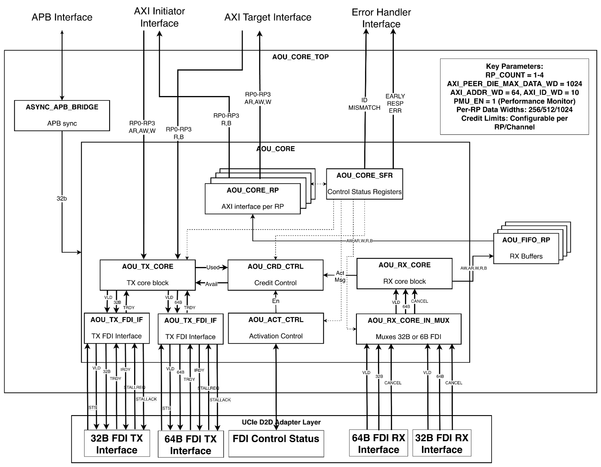
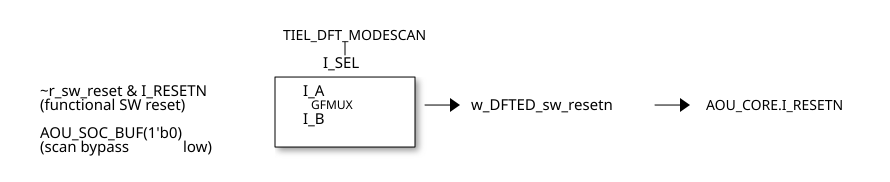
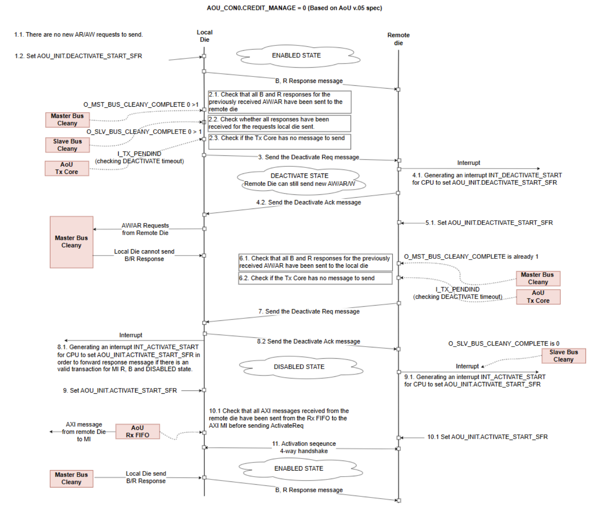
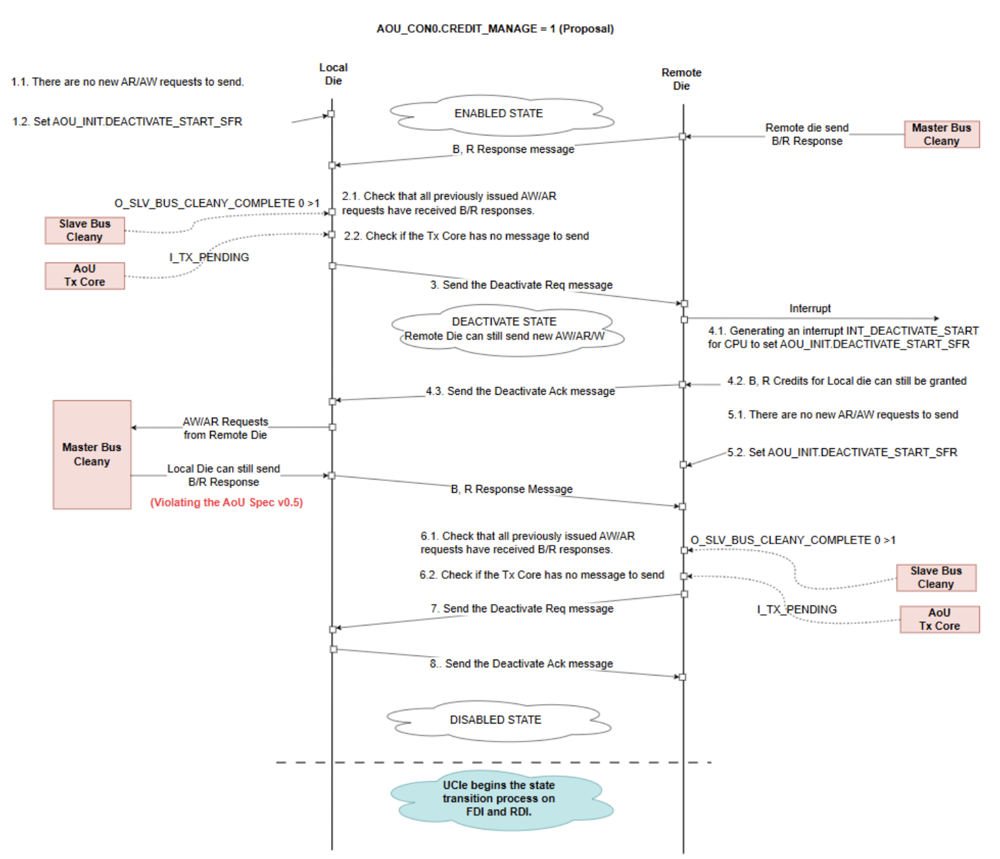
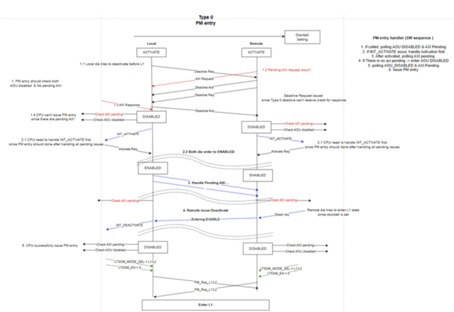
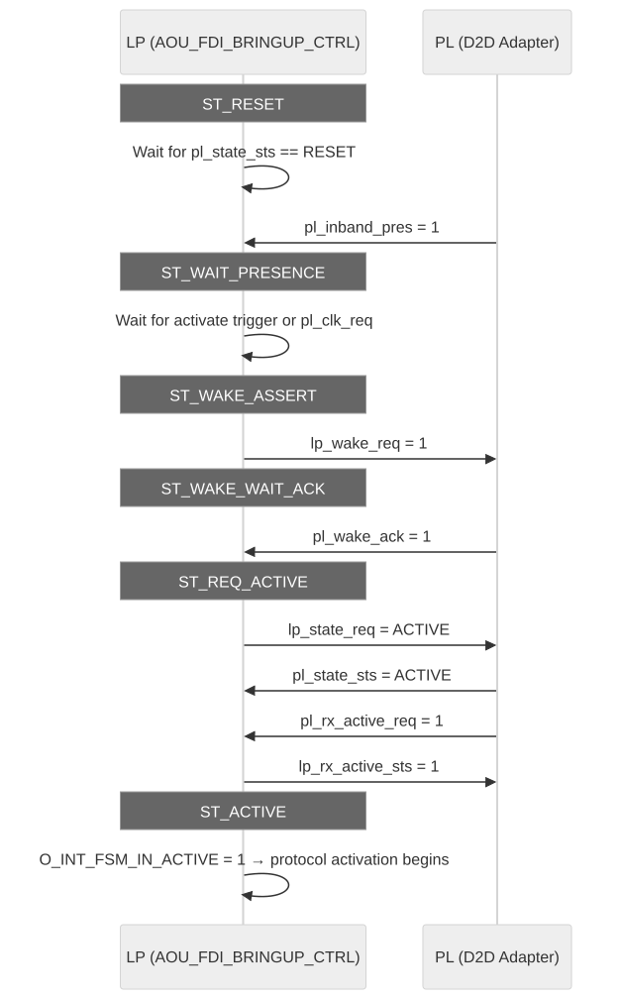
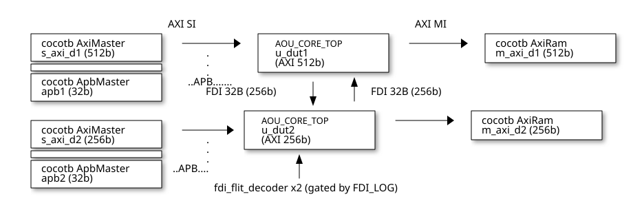

AXI-over-UCIe Bridge (AoU) Integration
Parameters, clocks, resets, and bring-up for the vendored AXI-over-UCIe bridge.
1. Integration guide
References
-
AXI over UCIe (AoU) Protocol Specification, v0.7 (https://cdn.sanity.io/files/jpb4ed5r/production/728b2f8cfc09023466cf350db53764890b4f2343.pdf)
-
AXI over UCIe (AoU) Protocol Specification, v0.5
-
Universal Chiplet Interconnect Express (UCIe) Specification, Revision 3.0 (https://www.uciexpress.org/)
-
Arm AMBA AXI and ACE Protocol Specification (AXI4) (https://developer.arm.com)
-
Arm AMBA APB Protocol Specification (https://developer.arm.com)
Arm, AMBA, AXI, APB, and ACE are registered trademarks or trademarks of Arm Limited (or its subsidiaries) in the US and/or elsewhere. Universal Chiplet Interconnect Express (UCIe) is a trademark of the UCIe Consortium. All other trademarks are the property of their respective owners.
Integration Options
The AOU IP can be integrated at two levels. Choose the option that matches your system's FDI bringup strategy:
| Option | Module | When to use | FDI bringup | Additional ports |
|---|---|---|---|---|
A (recommended) |
AOU_TOP |
Turn-key FDI bringup control is desired |
Handled internally by AOU_FDI_BRINGUP_CTRL |
FDI bringup control, SW bringup control, bringup status |
B |
AOU_CORE_TOP |
You have an external UCIe controller or custom FDI state machine |
Must be handled externally |
I_INT_FSM_IN_ACTIVE, O_AOU_ACTIVATE_ST_*, O_AOU_REQ_LINKRESET |
Note: All AXI, APB, FDI datapath, interrupt, and DFT interfaces are identical between AOU_TOP and AOU_CORE_TOP. The sections below that document these interfaces (Sections 2-8) apply to both modules unless otherwise noted.
For detailed micro-architecture information — including datapath internals, error handling, debugging features, and credit management — refer to the AOU_CORE Micro-Architecture Specification (DOC/MAS/index.adoc).
1. Module Overview
1.1 AOU_TOP
AOU_TOP is the recommended top-level integration module. It instantiates two submodules:
-
AOU_FDI_BRINGUP_CTRL — A UCIe 3.0 FDI state machine that manages the four FDI handshake pairs (wake, clock, state negotiation, RX activation) required to bring the FDI link from RESET to ACTIVE and handle teardown, LinkError recovery, Retrain, and L1 entry/exit.
-
AOU_CORE_TOP — The AXI-over-UCIe protocol engine described in Section 1.2.
The bringup controller drives I_INT_FSM_IN_ACTIVE into the protocol engine internally, so this signal is not exposed as a top-level port on AOU_TOP. Instead, AOU_TOP exposes:
-
FDI bringup control ports for the physical layer handshakes (Section 3.14)
-
Software bringup control pins (Section 3.15)
-
Bringup status outputs (Section 3.16)
The FDI bringup flow is described in Section 6.6.
1.2 AOU_CORE_TOP
Figure 1 shows high level block diagram of AOU CORE TOP.

1.2.1 Purpose and Function
The AOU_CORE_TOP is a bridge between AXI interface and the UCIe FDI interface, defined in AoU standard, AXI over UCIe Protocol Specification v0.7.
To achieve low latency, AOU_CORE directly handles signals related to the UCIe FDI interface data flow control and processes data in FDI-width chunks (32, 64, or 128 bytes, as selected by the FDI_CONFIG parameter) in a cut-through manner, without converting them to 256-byte flit data. It receives AXI messages from its own AXI slave interface, packs them into FDI-width chunks, and transmits these chunks to the remote AoU device via UCIe. The remote AoU receives these FDI-width chunks from the UCIe FDI interface, unpacks them into AXI messages, and delivers the data through its AXI master interface. It supports flow control for all exceptional cases defined in the UCIe standard. First, it handles the chunk valid/cancel signal, including the alternative implementation method described in the UCIe specification. Second, it handles the stall request signal received from the D2D Adapter while maintaining the Flit-aligned boundary.
Interoperability is also supported when the remote device uses a different AXI data width. AOU_CORE supports a configurable number of Resource Plane(RPs), with both the number of RPs and each RP’s AXI data width fully parameterizable. A dedicated field in the SFR allows software to configure the target RP, enabling flexible RP mapping. For each RP, the AW, W and AR channel support three arbitration modes: Round Robin, AXI QoS scheme, and Port QoS scheme. Additionally, a starvation-prevention mechanism is implemented to ensure fair arbitration across all RP channels.
AOU_CORE_TOP implements the subset of FDI signals required specifically for transporting AXI across UCIe. FDI bringup/teardown and FDI sideband flows are expected to be handled by other components.
The block consists of the following sub blocks
-
AOU_CORE
-
AOU_CORE_RP Manages a AXI interface for write request, read request, write data, read data and write response busses
-
AOU_CORE_SFR This implements control and status register of the AOU core. It has a 32bit APB interface for programming. It configures all the blocks in the core.
-
AOU_TX_CORE This block packs the arbitrated AXI channels, credits, and activation messages into FDI-width chunks (32, 64, or 128 bytes per FDI_CONFIG). It follows AOU specifications to pack the messages into 256 byte flit data. It then passes it onto UCIe controller over the FDI interface for transmission.
-
AOU_CRD_CTRL This block manages credits available for TX. It gets remote credits available from AOU_RX_CORE, and used credits from AOU_TX_CORE and creates final credits that can be used for TX.
-
AOU_RX_CORE This block processes FDI-width chunks (32, 64, or 128 bytes per FDI_CONFIG) received by UCIe controller and passed to the core over the FDI interface. It decodes different message types which encapsulate different AXI channel transactions. These messages are buffered and then passed onto AOU_CORE_RP for presenting the transaction to its corresponding AXI interface.
-
AOU_TX_FDI_IF This block receives FDI-width data chunks from AOU_TX_CORE and buffers them. It does handshake with UCIe controller FDI RX interface and passes the data chunks downstream to be sent to remote chiplet.
-
AOU_ACT_CTRL This block manages activation and deactivation control of the AOU bridge. It initiates activate and deactivate messages to remote AOU bridge when configured via APB.
-
-
AOU_FIFO_RP This block buffers decoded messages from AOU_RX_CORE. It separates the messages based on resource plane (RP) indicator and writes them into dedicated FIFOs. These FIFOs feed the corresponding AOU_CORE_RP which manage a single AXI interface.
-
ASYNC_APB_BRIDGE This block synchronizes APB transactions to the local core clock.
When using AOU_CORE_TOP directly, the integrator must provide an external FDI state machine that drives I_INT_FSM_IN_ACTIVE and the associated control/status signals listed in Section 3.12.
1.2.2 Key Features
-
Single APB interface Configuration/control/status register access
-
Multiple AXI master & slave interface
-
Configurable RP port & RP remapping supported
-
Supports variable data widths and burst length requests. Configurable FIFO Depth
-
-
UCIe 256B latency-optimized flit(Format 6) support only
-
Message packing and unpacking are handled in variable-sized units of 32, 64, or 128 bytes, corresponding to the FDI data width selected by FDI_CONFIG.
-
Selectable Early response by setting SFR8
-
Selectable 32B / 64B / 128B single-PHY and 32B+64B / 64B+128B two-PHY FDI configurations via the FDI_CONFIG parameter (see Section 2). Two-PHY variants additionally require the +define+TWO_PHY build flag so the second-PHY ports physically exist.
-
Parameterized number of Resource Plane and each RP’s AXI data width
-
RP Remapping
-
QoS scheme between RP with AW, W, AR channel
-
Interoperability with different data width remote die
-
Handling of flit cancel and stall request as specified in the UCIe specification
-
Selectable AXI Aggregator added for BUS efficiency
2. Parameter List
| Parameter | Type | Default / Note | Description |
|---|---|---|---|
RP_COUNT |
parameter |
1 |
Number of receive ports (AXI M/S pairs). Parameterizable up to 4. |
FDI_CONFIG |
parameter (int) |
FDI_CFG_SP_32B |
FDI width selector. See FDI_CONFIG values below. Two-PHY values additionally require +define+TWO_PHY at compile time. |
RP0_RX_AW_FIFO_DEPTH |
parameter |
44 |
RX AW FIFO depth for RP0. The depth of each RP*_RX_*_FIFO_DEPTH parameter should be determined by considering the Turn-Around-Time (TAT) between the local die and the remote die, so that no performance drop occurs due to AoU — TAT being the time, in a UCIe-integrated environment, from when the local die sends a message until the credit is received back from the remote die. |
RP0_RX_AR_FIFO_DEPTH |
parameter |
44 |
RX AR FIFO depth for RP0. |
RP0_RX_W_FIFO_DEPTH |
parameter |
88 / 140 |
RX W FIFO depth for RP0. Default is 140 when FDI_CONFIG selects a 1024b interface (FDI_CFG_SP_128B / FDI_CFG_TP_64B_128B); 88 otherwise. |
RP0_RX_R_FIFO_DEPTH |
parameter |
88 / 140 |
RX R FIFO depth for RP0. Same FDI-aware default as RP0_RX_W_FIFO_DEPTH. |
RP0_RX_B_FIFO_DEPTH |
parameter |
44 |
RX B FIFO depth for RP0. |
RP1_RX_AW_FIFO_DEPTH |
parameter |
44 |
RX AW FIFO depth for RP1. |
RP1_RX_AR_FIFO_DEPTH |
parameter |
44 |
RX AR FIFO depth for RP1. |
RP1_RX_W_FIFO_DEPTH |
parameter |
88 / 140 |
RX W FIFO depth for RP1 (FDI-aware default; see RP0). |
RP1_RX_R_FIFO_DEPTH |
parameter |
88 / 140 |
RX R FIFO depth for RP1 (FDI-aware default; see RP0). |
RP1_RX_B_FIFO_DEPTH |
parameter |
44 |
RX B FIFO depth for RP1. |
RP2_RX_AW_FIFO_DEPTH |
parameter |
44 |
RX AW FIFO depth for RP2. |
RP2_RX_AR_FIFO_DEPTH |
parameter |
44 |
RX AR FIFO depth for RP2. |
RP2_RX_W_FIFO_DEPTH |
parameter |
88 / 140 |
RX W FIFO depth for RP2 (FDI-aware default; see RP0). |
RP2_RX_R_FIFO_DEPTH |
parameter |
88 / 140 |
RX R FIFO depth for RP2 (FDI-aware default; see RP0). |
RP2_RX_B_FIFO_DEPTH |
parameter |
44 |
RX B FIFO depth for RP2. |
RP3_RX_AW_FIFO_DEPTH |
parameter |
44 |
RX AW FIFO depth for RP3. |
RP3_RX_AR_FIFO_DEPTH |
parameter |
44 |
RX AR FIFO depth for RP3. |
RP3_RX_W_FIFO_DEPTH |
parameter |
88 / 140 |
RX W FIFO depth for RP3 (FDI-aware default; see RP0). |
RP3_RX_R_FIFO_DEPTH |
parameter |
88 / 140 |
RX R FIFO depth for RP3 (FDI-aware default; see RP0). |
RP3_RX_B_FIFO_DEPTH |
parameter |
44 |
RX B FIFO depth for RP3. |
RX_AW_FIFO_RS_EN |
parameter |
1 |
When 1, inserts an output register-slice on the RX AW FIFO read port. Trades latency (+1 cycle) for timing closure. |
RX_AR_FIFO_RS_EN |
parameter |
1 |
RX AR FIFO output register-slice enable (see RX_AW_FIFO_RS_EN). |
RX_W_FIFO_RS_EN |
parameter |
1 |
RX W FIFO output register-slice enable (see RX_AW_FIFO_RS_EN). |
RX_R_FIFO_RS_EN |
parameter |
1 |
RX R FIFO output register-slice enable (see RX_AW_FIFO_RS_EN). |
RX_B_FIFO_RS_EN |
parameter |
1 |
RX B FIFO output register-slice enable (see RX_AW_FIFO_RS_EN). |
RP0_AXI_DATA_WD |
parameter |
512 |
AXI data width for RP0 (bits). |
RP1_AXI_DATA_WD |
parameter |
512 |
AXI data width for RP1 (bits). |
RP2_AXI_DATA_WD |
parameter |
512 |
AXI data width for RP2 (bits). |
RP3_AXI_DATA_WD |
parameter |
512 |
AXI data width for RP3 (bits). |
AXI_PEER_DIE_MAX_DATA_WD |
parameter |
1024 |
Maximum peer data width (bits). |
APB_ADDR_WD |
parameter |
32 |
APB address width. |
APB_DATA_WD |
parameter |
32 |
APB data width. |
S_RD_MO_CNT |
parameter |
32 |
Slave read outstanding count. |
S_WR_MO_CNT |
parameter |
32 |
Slave write outstanding count. |
M_RD_MO_CNT |
parameter |
32 |
Master read outstanding count. |
M_WR_MO_CNT |
parameter |
32 |
Master write outstanding count. |
FDI_CONFIG values
FDI_CONFIG is a single integer parameter that selects the FDI data width pair forwarded to the internal hierarchy. Named constants are declared in RTL/packet_def_pkg.sv and should be used at the instantiation site:
| FDI_CONFIG value | PHY0 width (FDI_IF_WD0) | PHY1 width (FDI_IF_WD1) | PHY count | Build flag |
|---|---|---|---|---|
FDI_CFG_SP_32B (default) |
256 |
512 (internal decode) |
Single PHY |
none |
FDI_CFG_SP_64B |
512 |
512 (internal decode) |
Single PHY |
none |
FDI_CFG_SP_128B |
1024 |
1024 (internal decode) |
Single PHY |
none |
FDI_CFG_TP_32B_64B |
256 |
512 |
Two PHY |
+define+TWO_PHY |
FDI_CFG_TP_64B_128B |
512 |
1024 |
Two PHY |
+define+TWO_PHY |
Notes:
-
For single-PHY values, only the PHY0 ports (I_FDI_PL_0_* / O_FDI_LP_0_*) carry traffic. The PHY1 internal width is used only as the RX-side decode width.
-
The two-PHY values (FDI_CFG_TP_*) are valid only when the design is built with +define+TWO_PHY. The build flag gates the physical presence of the PHY1 ports (I_FDI_PL_1_*, O_FDI_LP_1_*) and the I_PHY_TYPE selector on both AOU_TOP and AOU_CORE_TOP. Mixing a FDI_CFG_TP_* value with a build that omits +define+TWO_PHY (or vice-versa) is an integration error; the design does not enforce this consistency at elaboration time.
-
The FDI_CFG_TP_32B_128B (256b + 1024b) combination is not supported by the design: AOU_RX_CORE_IN_MUX requires FDI_IF_WD0 == FDI_IF_WD1 / 2 for two-PHY accumulation.
Build flags
| Flag | Effect |
|---|---|
+define+TWO_PHY |
Compile-time switch that adds the second-PHY ports (I_FDI_PL_1_*, O_FDI_LP_1_*) and the I_PHY_TYPE selector to both AOU_TOP and AOU_CORE_TOP. Required for FDI_CFG_TP_* values of FDI_CONFIG. |
3. Interface Signals
3.1 Clock and Reset
| Signal | Direction | Width | Description |
|---|---|---|---|
I_CLK |
input |
1 |
Core system clock (AOU_CORE and AOU_FIFO_RP). |
I_RESETN |
input |
1 |
Active-low asynchronous reset. |
I_PCLK |
input |
1 |
APB clock (slave side of async bridge). |
I_PRESETN |
input |
1 |
APB domain reset. |
3.2 APB Slave Interface
| Signal | Direction | Width | Description |
|---|---|---|---|
I_AOU_APB_SI0_PSEL |
input |
1 |
APB select. |
I_AOU_APB_SI0_PENABLE |
input |
1 |
APB enable. |
I_AOU_APB_SI0_PADDR |
input |
APB_ADDR_WD |
APB address. |
I_AOU_APB_SI0_PWRITE |
input |
1 |
APB write. |
I_AOU_APB_SI0_PWDATA |
input |
APB_DATA_WD |
APB write data. |
O_AOU_APB_SI0_PRDATA |
output |
APB_DATA_WD |
APB read data. |
O_AOU_APB_SI0_PREADY |
output |
1 |
APB ready. |
O_AOU_APB_SI0_PSLVERR |
output |
1 |
APB slave error. |
3.3 AXI Master (RX) – AR Channel
| Signal | Direction | Width | Description |
|---|---|---|---|
O_AOU_RX_AXI_M_ARID |
output |
[RP_COUNT-1:0][AXI_ID_WD-1:0] |
Read address ID. |
O_AOU_RX_AXI_M_ARADDR |
output |
[RP_COUNT-1:0][AXI_ADDR_WD-1:0] |
Read address. |
O_AOU_RX_AXI_M_ARLEN |
output |
[RP_COUNT-1:0][AXI_LEN_WD-1:0] |
Burst length. |
O_AOU_RX_AXI_M_ARSIZE |
output |
[RP_COUNT-1:0][2:0] |
Transfer size. |
O_AOU_RX_AXI_M_ARBURST |
output |
[RP_COUNT-1:0][1:0] |
Burst type. |
O_AOU_RX_AXI_M_ARLOCK |
output |
[RP_COUNT-1:0] |
Lock. |
O_AOU_RX_AXI_M_ARCACHE |
output |
[RP_COUNT-1:0][3:0] |
Cache attributes. |
O_AOU_RX_AXI_M_ARPROT |
output |
[RP_COUNT-1:0][2:0] |
Protection. |
O_AOU_RX_AXI_M_ARQOS |
output |
[RP_COUNT-1:0][3:0] |
QoS. |
O_AOU_RX_AXI_M_ARVALID |
output |
[RP_COUNT-1:0] |
AR valid. |
I_AOU_RX_AXI_M_ARREADY |
input |
[RP_COUNT-1:0] |
AR ready. |
3.4 AXI Master (RX) – R Channel
| Signal | Direction | Width | Description |
|---|---|---|---|
I_AOU_TX_AXI_M_RID |
input |
[RP_COUNT-1:0][AXI_ID_WD-1:0] |
Read data ID. |
I_AOU_TX_AXI_M_RDATA |
input |
[RP_COUNT-1:0][RP_AXI_DATA_WD_MAX-1:0] |
Read data. |
I_AOU_TX_AXI_M_RRESP |
input |
[RP_COUNT-1:0][1:0] |
Read response. |
I_AOU_TX_AXI_M_RLAST |
input |
[RP_COUNT-1:0] |
Read last. |
I_AOU_TX_AXI_M_RVALID |
input |
[RP_COUNT-1:0] |
R valid. |
O_AOU_TX_AXI_M_RREADY |
output |
[RP_COUNT-1:0] |
R ready. |
3.5 AXI Master (RX) – AW Channel
| Signal | Direction | Width | Description |
|---|---|---|---|
O_AOU_RX_AXI_M_AWID |
output |
[RP_COUNT-1:0][AXI_ID_WD-1:0] |
Write address ID. |
O_AOU_RX_AXI_M_AWADDR |
output |
[RP_COUNT-1:0][AXI_ADDR_WD-1:0] |
Write address. |
O_AOU_RX_AXI_M_AWLEN |
output |
[RP_COUNT-1:0][AXI_LEN_WD-1:0] |
Burst length. |
O_AOU_RX_AXI_M_AWSIZE |
output |
[RP_COUNT-1:0][2:0] |
Transfer size. |
O_AOU_RX_AXI_M_AWBURST |
output |
[RP_COUNT-1:0][1:0] |
Burst type. |
O_AOU_RX_AXI_M_AWLOCK |
output |
[RP_COUNT-1:0] |
Lock. |
O_AOU_RX_AXI_M_AWCACHE |
output |
[RP_COUNT-1:0][3:0] |
Cache attributes. |
O_AOU_RX_AXI_M_AWPROT |
output |
[RP_COUNT-1:0][2:0] |
Protection. |
O_AOU_RX_AXI_M_AWQOS |
output |
[RP_COUNT-1:0][3:0] |
QoS. |
O_AOU_RX_AXI_M_AWVALID |
output |
[RP_COUNT-1:0] |
AW valid. |
I_AOU_RX_AXI_M_AWREADY |
input |
[RP_COUNT-1:0] |
AW ready. |
3.6 AXI Master (RX) – W and B Channels
| Signal | Direction | Width | Description |
|---|---|---|---|
O_AOU_RX_AXI_M_WDATA |
output |
[RP_COUNT-1:0][RP_AXI_DATA_WD_MAX-1:0] |
Write data. |
O_AOU_RX_AXI_M_WSTRB |
output |
[RP_COUNT-1:0][RP_AXI_STRB_WD_MAX-1:0] |
Write strobe. |
O_AOU_RX_AXI_M_WLAST |
output |
[RP_COUNT-1:0] |
Write last. |
O_AOU_RX_AXI_M_WVALID |
output |
[RP_COUNT-1:0] |
W valid. |
I_AOU_RX_AXI_M_WREADY |
input |
[RP_COUNT-1:0] |
W ready. |
I_AOU_TX_AXI_M_BID |
input |
[RP_COUNT-1:0][AXI_ID_WD-1:0] |
Write response ID. |
I_AOU_TX_AXI_M_BRESP |
input |
[RP_COUNT-1:0][1:0] |
Write response. |
I_AOU_TX_AXI_M_BVALID |
input |
[RP_COUNT-1:0] |
B valid. |
O_AOU_TX_AXI_M_BREADY |
output |
[RP_COUNT-1:0] |
B ready. |
3.7 AXI Slave (TX) – AR Channel
| Signal | Direction | Width | Description |
|---|---|---|---|
I_AOU_TX_AXI_S_ARID |
input |
[RP_COUNT-1:0][AXI_ID_WD-1:0] |
Read address ID. |
I_AOU_TX_AXI_S_ARADDR |
input |
[RP_COUNT-1:0][AXI_ADDR_WD-1:0] |
Read address. |
I_AOU_TX_AXI_S_ARLEN |
input |
[RP_COUNT-1:0][AXI_LEN_WD-1:0] |
Burst length. |
I_AOU_TX_AXI_S_ARSIZE |
input |
[RP_COUNT-1:0][2:0] |
Transfer size. |
I_AOU_TX_AXI_S_ARBURST |
input |
[RP_COUNT-1:0][1:0] |
Burst type. |
I_AOU_TX_AXI_S_ARLOCK |
input |
[RP_COUNT-1:0] |
Lock. |
I_AOU_TX_AXI_S_ARCACHE |
input |
[RP_COUNT-1:0][3:0] |
Cache attributes. |
I_AOU_TX_AXI_S_ARPROT |
input |
[RP_COUNT-1:0][2:0] |
Protection. |
I_AOU_TX_AXI_S_ARQOS |
input |
[RP_COUNT-1:0][3:0] |
QoS. |
I_AOU_TX_AXI_S_ARVALID |
input |
[RP_COUNT-1:0] |
AR valid. |
O_AOU_TX_AXI_S_ARREADY |
output |
[RP_COUNT-1:0] |
AR ready. |
3.8 AXI Slave (TX) – R Channel
| Signal | Direction | Width | Description |
|---|---|---|---|
O_AOU_RX_AXI_S_RID |
output |
[RP_COUNT-1:0][AXI_ID_WD-1:0] |
Read data ID. |
O_AOU_RX_AXI_S_RDATA |
output |
[RP_COUNT-1:0][RP_AXI_DATA_WD_MAX-1:0] |
Read data. |
O_AOU_RX_AXI_S_RRESP |
output |
[RP_COUNT-1:0][1:0] |
Read response. |
O_AOU_RX_AXI_S_RLAST |
output |
[RP_COUNT-1:0] |
Read last. |
O_AOU_RX_AXI_S_RVALID |
output |
[RP_COUNT-1:0] |
R valid. |
I_AOU_RX_AXI_S_RREADY |
input |
[RP_COUNT-1:0] |
R ready. |
3.9 AXI Slave (TX) – AW, W, B Channels
| Signal | Direction | Width | Description |
|---|---|---|---|
I_AOU_TX_AXI_S_AWID |
input |
[RP_COUNT-1:0][AXI_ID_WD-1:0] |
Write address ID. |
I_AOU_TX_AXI_S_AWADDR |
input |
[RP_COUNT-1:0][AXI_ADDR_WD-1:0] |
Write address. |
I_AOU_TX_AXI_S_AWLEN |
input |
[RP_COUNT-1:0][AXI_LEN_WD-1:0] |
Burst length. |
I_AOU_TX_AXI_S_AWSIZE |
input |
[RP_COUNT-1:0][2:0] |
Transfer size. |
I_AOU_TX_AXI_S_AWBURST |
input |
[RP_COUNT-1:0][1:0] |
Burst type. |
I_AOU_TX_AXI_S_AWLOCK |
input |
[RP_COUNT-1:0] |
Lock. |
I_AOU_TX_AXI_S_AWCACHE |
input |
[RP_COUNT-1:0][3:0] |
Cache attributes. |
I_AOU_TX_AXI_S_AWPROT |
input |
[RP_COUNT-1:0][2:0] |
Protection. |
I_AOU_TX_AXI_S_AWQOS |
input |
[RP_COUNT-1:0][3:0] |
QoS. |
I_AOU_TX_AXI_S_AWVALID |
input |
[RP_COUNT-1:0] |
AW valid. |
O_AOU_TX_AXI_S_AWREADY |
output |
[RP_COUNT-1:0] |
AW ready. |
I_AOU_TX_AXI_S_WDATA |
input |
[RP_COUNT-1:0][RP_AXI_DATA_WD_MAX-1:0] |
Write data. |
I_AOU_TX_AXI_S_WSTRB |
input |
[RP_COUNT-1:0][RP_AXI_STRB_WD_MAX-1:0] |
Write strobe. |
I_AOU_TX_AXI_S_WLAST |
input |
[RP_COUNT-1:0] |
Write last. |
I_AOU_TX_AXI_S_WVALID |
input |
[RP_COUNT-1:0] |
W valid. |
O_AOU_TX_AXI_S_WREADY |
output |
[RP_COUNT-1:0] |
W ready. |
O_AOU_RX_AXI_S_BID |
output |
[RP_COUNT-1:0][AXI_ID_WD-1:0] |
Write response ID. |
O_AOU_RX_AXI_S_BRESP |
output |
[RP_COUNT-1:0][1:0] |
Write response. |
O_AOU_RX_AXI_S_BVALID |
output |
[RP_COUNT-1:0] |
B valid. |
I_AOU_RX_AXI_S_BREADY |
input |
[RP_COUNT-1:0] |
B ready. |
3.10 PHY and FDI (Flit Data Interface)
The FDI port set is split into two banks: PHY0 (always present) and PHY1 (present only when the design is built with +define+TWO_PHY). Both banks use the parameterized widths derived from FDI_CONFIG (see Section 2 - FDI_CONFIG values).
| FDI_CONFIG | FDI_IF_WD0 (PHY0 width) | FDI_IF_WD1 (PHY1 width) | PHY1 ports present |
|---|---|---|---|
FDI_CFG_SP_32B |
256 |
512 (internal decode) |
no |
FDI_CFG_SP_64B |
512 |
512 (internal decode) |
no |
FDI_CFG_SP_128B |
1024 |
1024 (internal decode) |
no |
FDI_CFG_TP_32B_64B |
256 |
512 |
yes (+define+TWO_PHY) |
FDI_CFG_TP_64B_128B |
512 |
1024 |
yes (+define+TWO_PHY) |
PHY0 (always present)
| Signal | Direction | Width | Description |
|---|---|---|---|
I_FDI_PL_0_VALID |
input |
1 |
PHY0 flit valid from PHY. |
I_FDI_PL_0_DATA |
input |
FDI_IF_WD0 |
PHY0 flit data. |
I_FDI_PL_0_FLIT_CANCEL |
input |
1 |
PHY0 flit cancel. |
I_FDI_PL_0_TRDY |
input |
1 |
PHY0 ready. |
I_FDI_PL_0_STALLREQ |
input |
1 |
PHY0 stall request. |
I_FDI_PL_0_STATE_STS |
input |
[3:0] |
PHY0 state status. |
O_FDI_LP_0_DATA |
output |
FDI_IF_WD0 |
PHY0 flit data to PHY. |
O_FDI_LP_0_VALID |
output |
1 |
PHY0 flit valid. |
O_FDI_LP_0_IRDY |
output |
1 |
PHY0 link ready. |
O_FDI_LP_0_STALLACK |
output |
1 |
PHY0 stall acknowledge. |
PHY1 (present only when +define+TWO_PHY)
| Signal | Direction | Width | Description |
|---|---|---|---|
I_FDI_PL_1_VALID |
input |
1 |
PHY1 flit valid from PHY. |
I_FDI_PL_1_DATA |
input |
FDI_IF_WD1 |
PHY1 flit data. |
I_FDI_PL_1_FLIT_CANCEL |
input |
1 |
PHY1 flit cancel. |
I_FDI_PL_1_TRDY |
input |
1 |
PHY1 ready. |
I_FDI_PL_1_STALLREQ |
input |
1 |
PHY1 stall request. |
I_FDI_PL_1_STATE_STS |
input |
[3:0] |
PHY1 state status. |
O_FDI_LP_1_DATA |
output |
FDI_IF_WD1 |
PHY1 flit data to PHY. |
O_FDI_LP_1_VALID |
output |
1 |
PHY1 flit valid. |
O_FDI_LP_1_IRDY |
output |
1 |
PHY1 link ready. |
O_FDI_LP_1_STALLACK |
output |
1 |
PHY1 stall acknowledge. |
PHY type select (present only when +define+TWO_PHY)
| Signal | Direction | Width | Description |
|---|---|---|---|
I_PHY_TYPE |
input |
1 |
PHY selector for state-status / stall-request multiplexing: 0 = PHY0, 1 = PHY1. See Section 6.6.4. |
3.11 Interrupt and Error (to Error Handler)
| Signal | Direction | Width | Description |
|---|---|---|---|
INT_REQ_LINKRESET |
output |
1 |
Link reset request. |
INT_SI0_ID_MISMATCH |
output |
1 |
Slave interface ID mismatch. |
INT_MI0_ID_MISMATCH |
output |
1 |
Master interface ID mismatch. |
INT_EARLY_RESP_ERR |
output |
1 |
Early response error. |
INT_ACTIVATE_START |
output |
1 |
Activate start. |
INT_DEACTIVATE_START |
output |
1 |
Deactivate start. |
3.12 UCIe / External Control and Status
AOU_TOP users: The signals in this table are present on AOU_CORE_TOP only. When integrating via AOU_TOP, these signals are consumed/generated internally by AOU_FDI_BRINGUP_CTRL and are not exposed as top-level ports. See Section 3.17.
| Signal | Direction | Width | Description |
|---|---|---|---|
I_INT_FSM_IN_ACTIVE |
input |
1 |
Initialization done / FSM in active state indicator. |
I_MST_BUS_CLEANY_COMPLETE |
input |
1 |
Master bus cleany complete. |
I_SLV_BUS_CLEANY_COMPLETE |
input |
1 |
Slave bus cleany complete. |
O_AOU_ACTIVATE_ST_DISABLED |
output |
1 |
Activation state disabled. |
O_AOU_ACTIVATE_ST_ENABLED |
output |
1 |
Activation state enabled. |
O_AOU_REQ_LINKRESET |
output |
1 |
AOU link reset request. |
-
I_INT_FSM_IN_ACTIVE is an input signal that indicates that the link up is complete. When starting the test, I_INT_FSM_IN_ACTIVE should be 0, and when you want to activate AOU_CORE, I_INT_FSM_IN_ACTIVE should be 1. When testing with IP standalone, you must force I_INT_FSM_IN_ACTIVE.
-
I_MST_BUS_CLEANY_COMPLETE is asserted when all responses to the remote die's requests have been completed. The signal originates from the BUS_CLEANY. If the BUS_CLEANY feature is not used, the corresponding port must be tied to 1.
-
I_SLV_BUS_CLEANY_COMPLETE is asserted when all responses from the remote die have been received for the requests sent by the local die. The signal originates from the BUS_CLEANY. If the BUS_CLEANY feature is not used, the corresponding port must be tied to 1.
-
After AOU_CORE deactivation, the activation status transitions to DISABLED, allowing the UCIe link to go down. Once deactivation completes, O_AOU_ACTIVATE_ST_DISABLED is asserted to notify the UCIE_CORE.
-
When the AOU_CORE is in the ENABLED state, O_AOU_ACTIVATE_ST_ENABLED is asserted to notify the UCIE_CORE.
-
O_AOU_REQ_LINKRESET is asserted together with INT_REQ_LINKRESET when the AOU_CORE detects an AoU protocol violation, to notify the UCIE_CORE.
3.13 DFT
| Signal | Direction | Width | Description |
|---|---|---|---|
TIEL_DFT_MODESCAN |
input |
1 |
Scan-mode indicator. Tie low in functional operation; assert high from the SoC scan controller during scan shift and capture. |
3.13.1 TIEL_DFT_MODESCAN Usage
TIEL_DFT_MODESCAN controls a glitch-free mux (u_sw_reset_mux, instance of AOU_SOC_GFMUX_LVT) that selects the reset source for AOU_CORE:

-
Functional mode (TIEL_DFT_MODESCAN = 0): The mux selects I_A, the functional software-controlled reset path (~r_sw_reset & I_RESETN). This allows the CSR-writable SW reset to combine with the hardware reset.
-
Scan mode (TIEL_DFT_MODESCAN = 1): The mux selects I_B, a constant 1'b0 driven through AOU_SOC_BUF (dft_persistent_buf_scan_resetn_sw). This value de-asserts the active-low SW reset, neutralizing it so that scan chains can shift freely without the software reset logic interfering with controllability or observability.
The AOU_SOC_BUF instance exists solely to prevent the synthesis tool from optimizing away the tied-low constant; it must be preserved as a persistent buffer (see Section 8.7).
The SDC file (INTEG/constraints/aou_core_top.sdc) constrains this pin with set_case_analysis 0 in functional timing mode.
3.13.2 Integrator DFT Responsibilities
The design provides internal DFT muxing only for the software-controlled reset path (w_DFTED_sw_resetn). The two primary hardware resets and all scan infrastructure are the integrator's responsibility:
| Responsibility | Detail |
|---|---|
HW reset DFT muxes |
I_RESETN and I_PRESETN have no internal scan-mode bypass. The integrator must add external DFT muxes (or equivalent) on both resets so they can be held inactive (high) during scan shift and capture. Without this, all flip-flops using these resets will be uncontrollable during ATPG. |
Scan chain insertion |
The design has no SCAN_EN, SCAN_IN, or SCAN_OUT ports. The integrator must insert scan chains via the synthesis tool's DFT insertion flow or by adding scan ports manually. |
Multi-clock scan definition |
I_CLK (1 GHz core) and I_PCLK (100 MHz APB) must be defined as separate scan clocks. The ATPG tool must not shift both domains simultaneously, or lockup latches must be inserted at domain boundaries. |
I/O constraints during scan |
AXI and FDI interface ports should be constrained to safe values during scan (via wrapper cells or top-level scan constraints) to prevent unintended activity on external buses. |
CDC synchronizer handling |
The AOU_SOC_SYNCHSR instances in the ASYNC_APB_BRIDGE require scan-safe treatment. See Section 8.7 for replacement cell requirements. |
3.14 FDI Bringup Control Interface (AOU_TOP only)
These signals connect AOU_TOP to the D2D adapter's physical layer for FDI bringup control. They are not present on AOU_CORE_TOP.
| Signal | Direction | Width | Description |
|---|---|---|---|
I_PL_INBAND_PRES |
input |
1 |
Inband presence detect from PL. The bringup FSM waits for this before initiating the wake handshake. |
I_PL_CLK_REQ |
input |
1 |
PL clock request. LP responds with O_LP_CLK_ACK. |
I_PL_WAKE_ACK |
input |
1 |
PL acknowledgement of LP wake request. |
I_PL_RX_ACTIVE_REQ |
input |
1 |
PL requests RX activation. LP responds with O_LP_RX_ACTIVE_STS. |
O_LP_STATE_REQ |
output |
[3:0] |
LP state request (RESET=0, ACTIVE=1, LinkError=2, Retrain=3, L1=4). |
O_LP_WAKE_REQ |
output |
1 |
LP-initiated wake request. |
O_LP_CLK_ACK |
output |
1 |
LP acknowledgement of PL clock request. |
O_LP_RX_ACTIVE_STS |
output |
1 |
LP RX active status in response to I_PL_RX_ACTIVE_REQ. |
The four handshake pairs correspond to UCIe 3.0 FDI bringup control signals:
| Handshake | LP signal | PL signal | Purpose |
|---|---|---|---|
Wake |
O_LP_WAKE_REQ |
I_PL_WAKE_ACK |
LP-initiated link wake from low-power |
Clock |
O_LP_CLK_ACK |
I_PL_CLK_REQ |
PL-initiated clock request |
State |
O_LP_STATE_REQ |
(via I_FDI_PL_*_STATE_STS) |
State negotiation |
RX Active |
O_LP_RX_ACTIVE_STS |
I_PL_RX_ACTIVE_REQ |
RX path activation |
3.15 FDI Bringup Software Control (AOU_TOP only)
These top-level ports provide direct software control over the FDI bringup FSM. They are not SFR-mapped; the integrator must drive them from external logic or tie them as needed.
| Signal | Direction | Width | Description |
|---|---|---|---|
I_SW_ACTIVATE_START |
input |
1 |
Trigger FDI bringup (RESET to ACTIVE). ORed internally with the core's INT_ACTIVATE_START. |
I_SW_DEACTIVATE_START |
input |
1 |
Trigger FDI teardown. ORed internally with the core's INT_DEACTIVATE_START. |
I_SW_RETRAIN_REQ |
input |
1 |
Request link retrain (LP-initiated). |
I_SW_LINKERROR_INJECT |
input |
1 |
Force the bringup FSM into LinkError state for debug/test. |
3.16 FDI Bringup Status (AOU_TOP only)
| Signal | Direction | Width | Description |
|---|---|---|---|
O_FDI_FSM_STATE |
output |
[3:0] |
Current FDI state. Encoding matches UCIe 3.0: RESET=0, ACTIVE=1, LinkError=2, Retrain=3, L1=4, L2=5, Disabled=6. |
O_FDI_LINK_UP |
output |
1 |
Asserted when the FDI bringup FSM is in the ACTIVE state. |
3.17 AOU_CORE_TOP-only Ports (not on AOU_TOP)
The following signals are present on AOU_CORE_TOP but are not exposed on AOU_TOP. In AOU_TOP, they are consumed or generated internally by AOU_FDI_BRINGUP_CTRL.
| Signal | Direction (on AOU_CORE_TOP) | Description |
|---|---|---|
I_INT_FSM_IN_ACTIVE |
input |
FDI link active indicator. Driven by the bringup FSM's O_INT_FSM_IN_ACTIVE inside AOU_TOP. |
O_AOU_ACTIVATE_ST_DISABLED |
output |
Protocol activation state: disabled. Fed back to bringup FSM. |
O_AOU_ACTIVATE_ST_ENABLED |
output |
Protocol activation state: enabled. Fed back to bringup FSM. |
O_AOU_REQ_LINKRESET |
output |
Protocol-level LinkReset request. Fed back to bringup FSM. |
4. Software operation Guide
This section gives information about operation guide for the AOU_CORE.
4.1 Register Map
The complete register map — address offsets, field definitions, access types, and reset values — is generated from the SystemRDL source and maintained separately:
-
AOU Core CSR Reference (generated from csr/aou-core.rdl)
To regenerate after editing the RDL source, see DOC/csr/README.md.
5. Interrupts
-
INT_ACTIVATE_START An interrupt that occurs when activation of the AoU Protocol layer is required. The interrupt can be cleared by writing '1' to the AOU_CORE.AOU_INIT.INT_ACTIVATE_START SFR.
-
INT_DEACTIVATE_START An interrupt that occurs when deactivation of the AoU Protocol layer is required. The interrupt can be cleared by writing '1' to the AOU_CORE.AOU_INIT.INT_DEACTIVATE_START SFR.
-
INT_SI0_ID_MISMATCH An interrupt that occurs on the AXI Slave Interface when a B or R channel response is received with an ID that was not previously issued as a request. SW can check the mismatched AXI ID by reading AOU_CORE.AXI_SLV_ID_MISMATCH_ERR SFR. The interrupt can be cleared by writing '1' to the AOU_CORE.AXI_SLV_ID_MISMATCH_ERR.SLV_B/RRESP_ERR SFR.
-
INT_MI0_ID_MISMATCH An interrupt that occurs on the AXI Master Interface when a B or R channel response is received with an ID that was not previously issued as a request. SW can check the mismatched AXI ID by reading AOU_CORE.ERROR_INFO SFR. The interrupt can be cleared by writing '1' to the AOU_CORE.ERROR_INFO.SPLIT_B/RID_MISMATCH_ERR SFR.
-
INT_EARLY_RESP_ERR An interrupt that occurs when, due to the Write Early Response feature, a B response has already been sent through the AXI Slave Interface, and a subsequent actual B response arrives with an Error. SW can check the ID and error type of the transaction in which the error occurred by reading AOU_CORE.WRITE_EARLY_RESPONSE SFR. The interrupt can be cleared by writing '1' to the AOU_CORE.WRITE_EARLY_RESPONSE.WRITE_RESP_ERR SFR.
-
INT_REQ_LINKRESET An interrupt that occurs when AOU_CORE receives a protocol violation. Refer to the AOU_CORE Micro-Architecture Specification (DOC/MAS/interrupts-errors.adoc) for debugging details. When AOU_CORE receives a protocol violation, SW needs to do SW reset AOU_CORE and re-enter the activation sequence.
6. Activation Flow
AOU_TOP users: When using AOU_TOP, FDI bringup (RESET to ACTIVE) is handled by AOU_FDI_BRINGUP_CTRL before protocol-level activation begins. The protocol activation described in this section occurs after O_FDI_LINK_UP is asserted. See Section 6.6 for the FDI bringup sequence.
The Activation of AOU_CORE begins after the UCIe Link-up process has been successfully completed. The completion of UCIe link-up is indicated by the I_INT_FSM_IN_ACTIVE signal of the AOU_CORE_TOP. There is no dependency between the activation of the local die and the remote die. Each die may initiate the activation sequence independently, which means the timing of sending ActivateReq can differ. Both dies must exchange ActivateReq and ActivateAck messages to transition to the ENABLED state, at which point credited messages can be transmitted.
Regardless of its own activation state, a die must send an ActivateAck in response to an ActivateReq from the other die, to acknowledge receipt of the request.
6.1 Credit Management Type
There are two types of Credit Management Type. Since current AOU_SPEC cannot resolve pending AXI response without Activate again. When Credit Management type is set to 1, during Deactivated state, AOU_CORE can resolve pending AXI response itself.
It can be configured through AOU_CON0.CREDIT_MANAGE, and the default value is 1.
| Credit Management Type | Specification | Description |
|---|---|---|
0 |
Based on AoU v0.5 |
After deactivation, if a new request is received from the remote die, no response message can be sent. To deliver the corresponding response, the system must go through activation again after deactivation. Credit management and transmission availability for both Request-related messages and Response-related messages are controlled together. Credited messages must not be sent, after the DeactivateReq message is sent. Credits must not be sent after the DeactivateAck message is sent. The Activate Interrupt and Deactivate Interrupt that occur in the process of resuming the exchange of response messages impose mandatory requirements to set Activate and Deactivate SFR. |
1 (default) |
Proposal by BOS |
When the AoU Activity state is DEACTIVATE, manage Request-related messages (WREQ, RREQ,WDATA) and Response-related messages (RDATA, WRESP) separately. RDATA, WRESP Credited messages can be sent, after the DeactivateReq message is sent. Credits for RDATA, WRESP messages must be sent after the DeactivateAck message is sent. The Deactivate interrupt only provides a hint indicating that the remote die has started to activate / deactivate. |
6.2 Activation Start
Activation can be initiated by setting ACTIVATE_START SFR: In the current implementation, credits are granted based on the depth of the RX FIFO, so it is required to ensure that all messages in the RX FIFO are popped before sending the ActivateReq message.
Activation START (via SFR AOU_INIT.ACTIVATE_START SFR)
-
Activation can be triggered by setting ACTIVATE_START.
-
Activation does not proceed until I_INT_FSM_IN_ACTIVE is asserted, since no flits can be transmitted beforehand. Therefore, it is allowed to set the ACTIVATE_START SFR before I_INT_FSM_IN_ACTIVE is asserted. If it is set before the assertion, the activation process will automatically proceed after I_INT_FSM_IN_ACTIVE becomes asserted.
-
AOU_INIT.ACTIVATE_START SFR is automatically cleared to 0 once the activation is completed and AOU_ACTIVATE_STATE transitions to ENABLED.
6.3 Deactivation Start
Deactivation is initiated by setting the AOU_INIT.DEACTIVATE_START register. Setting this register does not immediately trigger sending a DeactivateReq message. The detailed conditions and sequence for deactivation can be found in the Deactivation Sequence Flow section. This section will only describe AOU_INIT.DEACTIVATE_TIME_OUT_VALUE SFR.
-
When software initiates a DeactivateReq by setting the SFR, there may still be outstanding requests that have not yet left AOU_CORE FDI outputs.
-
To handle this safely, a timeout mechanism is implemented to ensure that no valid packets remain in the AOU_TX_CORE.
-
If software guarantees that all responses to its issued requests have been received before setting the deactivation start SFR, the deactivate TIME_OUT_VALUE (AOU_INIT.DEACTIVATE_TIME_OUT_VALUE SFR) can be safely configured to a shorter duration.
The ACTIVATION_OP field encodes deactivation messages as follows:
-
2 = DeactivateReq
-
3= DeactivateAck
6.3.1 Deactivation Sequence Flow
Once the local die issues a DeactivateReq, it can no longer provide responses to transactions initiated by the remote die. If the remote die continues to send requests or waits for responses without being notified, it may enter a hang state.
To manage this safely, the remote die must take explicit action upon receiving a DeactivateReq:
-
Immediately generate an interrupt to the CPU to inform the system software that a DeactivateReq has been received and that it must set the DEACTIVATE_START SFR. Although deactivation of the local die and the remote die operate independently, it is essential at the system level to communicate the deactivation & activation state through interrupts. This ensures that system software is explicitly informed of deactivation events and prevents the remote die from continuing to expect a response that will never arrive, thereby avoiding hang conditions.
-
This approach guarantees that once deactivation is initiated, both dies can coordinate the transition into safe and consistent DISABLED state.
-
If the software on both dies can explicitly coordinate to guarantee that all outstanding transactions have been completed and that no new transactions will be issued, then such a complicated implementation would not be necessary.


This system provides a bus cleanly-completion mechanism:
-
Slave bus cleanly indicates whether the local die has received all responses to the requests it sent to the remote die.
-
Master bus cleanly indicates whether the remote die has received all responses to the requests it sent to the local die.
After the local die sends a DeactivateReq, if the remote die issues a new request and expects a response, the system must re-enter the activation sequence before any response can be provided. Before sending a new ActivateReq, the Rx FIFO must be completely emptied – that is, all messages must be popped.
After deactivation, the credit count is reset, and during the subsequent activation process, credits are advertised based on the RX FIFO depth.
Therefore, before sending an ActivateReq, the local die must confirm, as described in the local die’s sequence 10.1, that all messages in the RX FIFO have been popped.
To meet satisfy the condition in the local die’s sequence 10.1, no backpressure must occur on the local die’s MI AW/AR/W channels.
6.4 Activation/Deactivation Interrupt
| Interrupt | Description |
|---|---|
INT_ACTIVATE_START |
When this interrupt is detected, either the AOU_INIT.ACTIVATE_START SFR must be set to 1. When AOU_INIT.ACTIVATE_STATE_ENABLED becomes 1, you must write 1 to the AOU_INIT.INT_ACTIVATE_START W1C SFR must be set to 1. An interrupt occurs when the following conditions are met while both AOU_INIT.ACTIVATE_START SFR is not set. There is a message to send When AOU_CON0.CREDIT_MANAGE is set to 0, if a new request arrives from the remote die after the local die has sent a DeactivateReq, this interrupt is asserted because the local die is required to return a response to the remote die. When AOU_CON0.CREDIT_MANAGE is set to 1, this interrupt can also be asserted if a new request after the remote die has sent a DeactivateReq. There is a response to be received (I_SLV_BUS_CLEANY_COMPLETE == 0) When AOU_CON0.CREDIT_MANAGE is set to 0, this interrupt can be asserted if the local die issues new AXI requests after the remote die has sent a DeactivateReq. An ActivateReq message is received from the remote die. |
INT_DEACTIVATE_START |
When AOU_CON0.CREDIT_MANAGE is set to 0, if the interrupt is detected, the master IP must stop sending new request messages and the AOU_INIT.DEACTIVATE_START SFR must be set to 1. When AOU_CON0.CREDIT_MANAGE is set to 1, if the interrupt is detected, this interrupt serves only as a hint that the remote die intends to deactivate. The local die can continue sending request messages. Once all messages have been sent, the AOU_INIT.DEACTIVATE_START SFR must be set. Otherwise, the remote die may end up in a state where it can never send requests again. When AOU_INIT.ACTIVATE_STATE_DISABLED becomes 1, SW must write 1 to the AOU_INIT.INT_DEACTIVATE_START W1C SFR must be set to 1. An interrupt can be asserted when AOU_INIT.DEACTIVATE_START SFR is not set and the local die receives a DeactivateReq message from the remote die. |
6.5 PM Entry / LinkReset / LinkDisabled Sequence
For PM entry / LinkReset / LinkDisable entry sequence, UCIE_CORE should check AOU_CORE state and try to change state. For this sequence, resolving pending AXI transactions is necessary.
Since current AOU SPEC has no way to send AXI responses after sending DeactiveReq. CREDIT_MANAGE = 0 (Type 0) is matched with current AOU_SPEC. For this case, SW needs to check whether there is pending AXI transaction.
6.5.1 PM Entry SW Sequence
-
Write AOU_INIT.DEACTIVATE_START to 1.
-
Polling AOU_INIT.ACTIVATE_STATE_DISABLED and AOU_INIT.SLV_TR_COMPLETE & AOU_INIT.MST_TR_COMPLETE. 2.1 Although AOU_CORE state becomes DISABLED, there may be pending AXI transactions. 2.2 AOU_CORE issues Interrupt for resolving pending AXI transactions. 2.3 Activate AOU_CORE and resolve pending AXI transactions. 2.4 Deactivate AOU_CORE
-
Polling AOU_INIT.ACTIVATE_STATE_DISABLED and AOU_INIT.SLV_TR_COMPLETE & AOU_INIT.MST_TR_COMPLETE.
-
Do PM Entry Sequence on UCIE_CORE.

6.5.2 Link Disable SW Sequence
Same as PM entry, before doing UCIe state transition, AOU_CORE needs to be Disabled properly.
-
Write AOU_INIT.DEACTIVATE_START to 1.
-
Polling AOU_INIT.ACTIVATE_STATE_DISABLED and AOU_INIT.SLV_TR_COMPLETE & AOU_INIT.MST_TR_COMPLETE. 2.1 Although AOU_CORE state becomes DISABLED, there may be pending AXI transactions. 2.2 AOU_CORE issues Interrupt for resolving pending AXI transactions. 2.3 Activate AOU_CORE and resolve pending AXI transactions. 2.4 Deactivate AOU_CORE
-
Polling AOU_INIT.ACTIVATE_STATE_DISABLED and AOU_INIT.SLV_TR_COMPLETE & AOU_INIT.MST_TR_COMPLETE.
-
Do LinkReset / LinkDisable Sequence on UCIE_CORE.
6.5.3 Link Reset SW Sequence
If AOU_CORE faces an uncorrectable error (ex. AOU SPEC violation), AOU_CORE sends LinkReset to CPU and D2D adapter. LinkReset indicates that an error has occurred which requires the Link to go down.
While handling LinkReset, SW needs to do AOU_CORE SW reset by setting AOU_CON0.AOU_SW_RESET.
6.6 FDI Bringup Flow (AOU_TOP only)
This section applies only when integrating via AOU_TOP. If you are using AOU_CORE_TOP directly, you must implement an equivalent FDI state machine externally.
6.6.1 Overview
AOU_FDI_BRINGUP_CTRL manages the UCIe 3.0 FDI state machine, handling the four handshake pairs required to bring the FDI link from RESET to ACTIVE and to manage teardown, LinkError recovery, Retrain, and L1 entry/exit.
The bringup FSM operates in the I_CLK domain and uses 12 internal states. The status output O_FDI_FSM_STATE maps these to the standard UCIe 3.0 FDI state encoding.
Once the bringup FSM reaches ACTIVE, it asserts O_INT_FSM_IN_ACTIVE into AOU_CORE_TOP, which enables protocol-level activation as described in Section 6.
6.6.2 Bringup Sequence
The normal (happy-path) bringup from cold reset proceeds as follows:

The steps in detail:
-
RESET: After hardware reset, the FSM waits for PL to report pl_state_sts = RESET and assert pl_inband_pres (remote die detected).
-
WAIT_PRESENCE: Remote die is present. The FSM asserts lp_rx_active_sts (if PL requests it) and waits for an activation trigger. The trigger can be:
-
I_SW_ACTIVATE_START (top-level port)
-
I_INT_ACTIVATE_START (from the core's activation controller)
-
I_PL_CLK_REQ (PL-initiated clock request)
-
-
WAKE_ASSERT / WAKE_WAIT_ACK: The LP-initiated wake handshake. lp_wake_req is asserted and the FSM waits for pl_wake_ack.
-
REQ_ACTIVE: Wake handshake complete. The FSM drives lp_state_req = ACTIVE and waits for both pl_state_sts = ACTIVE and pl_rx_active_req = 1.
-
ACTIVE: The FDI link is up. O_FDI_LINK_UP and O_INT_FSM_IN_ACTIVE are asserted. Protocol-level activation (Section 6) can now proceed.
6.6.3 Supported State Transitions
| From | To | Trigger |
|---|---|---|
ACTIVE |
LINKERROR |
pl_state_sts = LinkError, I_AOU_REQ_LINKRESET, or I_SW_LINKERROR_INJECT |
ACTIVE |
RETRAIN |
pl_state_sts = Retrain or I_SW_RETRAIN_REQ |
ACTIVE |
DEACTIVATE |
Deactivate request AND AOU_ACTIVATE_ST_DISABLED |
ACTIVE |
L1 |
pl_state_sts = L1 (PL-initiated only) |
LINKERROR |
RESET |
pl_state_sts = RESET |
RETRAIN |
ACTIVE |
pl_state_sts = ACTIVE |
RETRAIN |
LINKERROR |
pl_state_sts = LinkError |
DEACTIVATE |
UNWAKE_WAIT |
Unconditional (1 cycle) |
UNWAKE_WAIT |
RESET |
pl_wake_ack = 0 AND pl_state_sts = RESET |
L1 |
L1_CLK_WAKE |
pl_clk_req = 1 |
L1 |
WAKE_ASSERT |
Activate request |
L1_CLK_WAKE |
WAKE_ASSERT |
Unconditional (1 cycle, asserts lp_clk_ack) |
6.6.4 PHY Type Mux
Note: This PHY-type multiplexer is only present in builds compiled with +define+TWO_PHY. In single-PHY builds, the pl_state_sts and pl_stallreq signals routed to the bringup controller come from PHY0 unconditionally; the I_PHY_TYPE port and the PHY1-side ports do not exist on the module boundary.
When built with +define+TWO_PHY, AOU_TOP includes a PHY-type multiplexer controlled by I_PHY_TYPE:
| I_PHY_TYPE | Selected PHY | pl_state_sts source | pl_stallreq source |
|---|---|---|---|
0 |
PHY0 (FDI_IF_WD0) |
I_FDI_PL_0_STATE_STS |
I_FDI_PL_0_STALLREQ |
1 |
PHY1 (FDI_IF_WD1) |
I_FDI_PL_1_STATE_STS |
I_FDI_PL_1_STALLREQ |
The muxed pl_state_sts and pl_stallreq are routed to the bringup controller. FDI datapath signals (data, valid, trdy, etc.) pass through to AOU_CORE_TOP unchanged — the core's AOU_TX_FDI_IF and AOU_RX_FDI_IF handle per-PHY data-path switching internally.
6.6.5 Software Bringup Control
The I_SW_ACTIVATE_START and I_SW_DEACTIVATE_START ports on AOU_TOP are not SFR-mapped. They are top-level pins that must be driven by external logic (e.g. a system controller or GPIO). The bringup FSM ORs I_SW_ACTIVATE_START with the core's internal INT_ACTIVATE_START to form the combined activation trigger.
Note (GAP-15): The SFR register at address 0x8 bit[0] (activate_start) feeds the protocol-level activation controller, not the FDI bringup FSM. Writing this bit has no effect until the FDI link is already in the ACTIVE state. To trigger cold-start FDI bringup via software, assert I_SW_ACTIVATE_START on the AOU_TOP port or arrange for PL to drive pl_clk_req.
6.6.6 Known Limitations
The current implementation covers the core FDI bringup happy path. The following limitations apply (see RTL/fdi-bringup-todo.md for the full gap analysis):
| ID | Description |
|---|---|
GAP-1 |
No wake handshake timeout. If pl_wake_ack never arrives, the FSM hangs in ST_WAKE_WAIT_ACK indefinitely. |
GAP-3 |
L2 (deep low-power) state is not implemented. |
GAP-4 |
Disabled state is not implemented. |
GAP-9 |
LP-initiated L1 entry is not supported (L1 entry is PL-initiated only). |
GAP-15 |
SFR activate_start (0x8 bit[0]) is disconnected from the FDI bringup FSM. |
7 Verification Testbench
The verification flow is built on cocotb and cocotbext-axi. All verification IP is fetched from PyPI at install time — no commercial VIP is required and no AXI VIP source is vendored into this repository. The default simulator is Verilator (open source); Synopsys VCS is supported transparently for users with a commercial license.
The harness (VERIF/aou_cocotb_top.sv) instantiates two AOU_CORE_TOP cores back-to-back via their 32B (256b) single-PHY FDI interfaces. Each DUT is overridden with .FDI_CONFIG(packet_def_pkg::FDI_CFG_SP_32B) and the build does not define +define+TWO_PHY, so only the PHY0 ports are connected. The two DUT instances use different AXI data widths (512b and 256b) to exercise the width-interoperability path. The four AXI buses and two APB slave buses are exposed as flat top-level ports using cocotbext-axi's canonical signal naming (s_axi_d1_*, m_axi_d1_*, s_axi_d2_*, m_axi_d2_*, apb1_*, apb2_*) so the Python tests can use AxiBus.from_prefix(dut, "<prefix>") and ApbBus.from_prefix(dut, "<prefix>") directly. Refer to VERIF/README.md for setup, watchdogs, and the test list.
7.1 Architecture

The data flow for a write transaction initiated on u_dut1's AXI slave interface is:
-
The cocotb AxiMaster on s_axi_d1 issues a 512b write.
-
u_dut1 packs the AXI transaction into AOU flit(s) and transmits via the 32B (256b) PHY0 FDI port.
-
u_dut2 receives the FDI data, unpacks it, and presents the transaction on its AXI MI.
-
The cocotb AxiRam on m_axi_d2 accepts the write into its internal memory model.
-
A subsequent read to the same address returns the stored data back through the reverse FDI path.
-
The Python test compares the read data against the originally written payload byte-for-byte.
The reverse direction (initiated from s_axi_d2 to m_axi_d1) operates symmetrically.
A separate test (test_csr_reset_values) reads every register defined in csr/aou-core.rdl over APB on both DUTs immediately after reset and before APB activation, verifying that every sw-readable, reset-bearing field matches its RDL-defined reset value. The expected values are built at runtime by systemrdl-compiler, so the check self-updates whenever the RDL changes and surfaces RDL ↔ RTL drift on every run.
7.2 Components
| Component | Instance / role | Description |
|---|---|---|
AOU_CORE_TOP |
u_dut1 |
DUT instance 1. AXI data width = 512b (default parameters). FDI_CONFIG = FDI_CFG_SP_32B (256b PHY0; no TWO_PHY). |
AOU_CORE_TOP |
u_dut2 |
DUT instance 2. RP0-RP3 AXI data widths overridden to 256b. FDI_CONFIG = FDI_CFG_SP_32B. |
cocotbext.axi.AxiMaster |
s_axi_d1, s_axi_d2 |
Drives AXI writes/reads on each DUT's slave interface. |
cocotbext.axi.AxiRam |
m_axi_d1, m_axi_d2 |
Memory-backed AXI slave attached to each DUT's master interface. Stores writes and serves reads. |
cocotbext.axi.ApbMaster |
apb1, apb2 |
Drives the AOU activate write (paddr=0x8, pwdata=0x1) on each DUT after reset, and reads CSRs for the reset-value test. |
fdi_flit_decoder |
u_fdi_dec1, u_fdi_dec2 |
Passive FDI decoders. Log decoded flits to dut1_fdi.log / dut2_fdi.log. Built only when FDI_LOG=1 is passed to make. |
Key testbench parameters:
| Parameter | Value | Description |
|---|---|---|
CORE_CLK_PERIOD_NS |
1 ns |
Core clock period (AXI/FDI domain). |
APB_CLK_PERIOD_NS |
10 ns |
APB clock period. |
D1_AXI_DATA_WIDTH |
512 |
u_dut1 AXI data width (bits). |
D2_AXI_DATA_WIDTH |
256 |
u_dut2 AXI data width (bits). |
AXI_ADDR_WIDTH |
64 |
AXI address width. |
AXI_ID_WIDTH |
10 |
AXI ID width. |
APB_ADDR_WIDTH / APB_DATA_WIDTH |
32 / 32 |
APB widths on both DUT slaves. |
OVERALL_TIMEOUT_US |
500 |
Per-test sim-time backstop. |
7.3 Running the Testbench
From the repository root, set up the Python environment once and then invoke the testbench:
cd VERIF
bash setup_cocotb_env.sh # creates VERIF/venv/, installs cocotb + deps
source venv/bin/activate
make # Verilator (default), 8 parallel C++ jobs
make SIM=vcs # Synopsys VCS
make WAVES=1 # waveform dump (FST/VCD or FSDB/VPD)
make FDI_LOG=1 # enable fdi_flit_decoder logs
make clean # remove sim_build/ and generated artefactsA successful run prints *** SIMULATION PASSED *** and writes results.xml (junit). Per-phase watchdogs (reset, APB activate, APB read, AXI write, AXI read) name the stuck phase explicitly on stalls and dump a snapshot of the relevant signal values so the simulator never spins silently.
You can also drive the flow via pytest, which calls cocotb's runner API and parametrises across every simulator on PATH:
pytest -v # all available simulators
pytest -v -k verilator # only Verilator
SIM=vcs pytest -v # force Synopsys VCS8. IP Integration Collateral
Machine-readable integration collateral is generated from the SystemRDL register source (csr/aou-core.rdl) using PeakRDL. This section describes the available outputs, the single-source workflow, and regeneration instructions.
8.1 Generated Outputs (Phase 1)
| Output | Path | Audience |
|---|---|---|
IP-XACT register map (IEEE 1685-2014) |
INTEG/ipxact/gen/aou_core_regmap.xml |
SoC integration tools (register only — memoryMaps element) |
C header |
DOC/csr/aou_core_csr.h |
Firmware / driver developers (#define macros for offsets and field masks) |
Interactive HTML docs |
DOC/csr/html/ |
Browsable register reference (any team) |
UVM register model |
INTEG/uvm/aou_core_csr_uvm_pkg.sv |
Verification (UVM uvm_reg_block package) — drop into your UVM env's RAL tier. |
Markdown register docs |
DOC/csr/aou-core-csrs.md |
Quick reference (also linked from Section 4.1) |
Note: the in-repo cocotb testbench (Section 7) does not consume the generated UVM package — it parses csr/aou-core.rdl directly via systemrdl-compiler at runtime. The UVM package is shipped as collateral for integrators whose own verification environments are UVM-based.
8.2 Single Source of Truth
All register information lives in the SystemRDL source file csr/aou-core.rdl. Every output listed above is derived from this single file — there is no separate register spreadsheet or hand-maintained IP-XACT register map.
To modify register definitions (addresses, field widths, access types, reset values, descriptions), edit csr/aou-core.rdl and regenerate. IMPORTANT: RTL is not generated from RDL so any modification to RDL files will not be reflected in the design.
8.3 Regeneration
From the repository root, activate the Python virtual environment and run the generation script:
source venv/bin/activate
bash scripts/gen_collateral.shThe generation script automatically validates the IP-XACT output against the official Accellera IEEE 1685-2014 XSD schema after generation. The schema files are fetched from accellera.org on first run and cached locally (in INTEG/ipxact/schema/, gitignored).
To validate IP-XACT files independently:
python3 scripts/validate_ipxact.py INTEG/ipxact/gen/aou_core_regmap.xmlSee DOC/csr/README.md for a description of each output file and the top-level README.md for virtual-environment setup.
8.4 Planned: Full IP-XACT Component (Phase 2)
The Phase 1 IP-XACT output contains the <memoryMaps> element only (registers, fields, access types, reset values). A full IP-XACT component — including <busInterfaces> (ARM AMBA AXI4 and APB3), <ports>, and <model> parameters — is planned for a later phase.
This is deferred because AOU_CORE_TOP.sv uses SystemVerilog 2D packed arrays for its per-RP AXI ports (e.g., [RP_COUNT-1:0][AXI_ID_WD-1:0]), which have no clean single-dimension representation in IP-XACT. Once a wrapper module (AOU_CORE_TOP_WRAP) is created that flattens these into individual per-RP port signals, the full IP-XACT component will be generated by merging the PeakRDL register map into a hand-authored component template via scripts/merge_ipxact.py.
8.5 Timing Constraints (SDC)
Constraint files are located in INTEG/constraints/.
| File | Purpose |
|---|---|
aou_core_top.sdc |
Clock definitions, I/O delays, CDC, false paths |
aou_core_top.upf |
Power domain and supply network |
The SDC file defines timing constraints for synthesis and STA. All delay budget variables are declared at the top of the file and can be overridden by the integrating project.
8.5.1 Clock Definitions
| Clock | Port | Frequency | Period |
|---|---|---|---|
clk_core |
I_CLK |
1 GHz |
1.000 ns |
clk_apb |
I_PCLK |
100 MHz |
10.000 ns |
Both resets (I_RESETN, I_PRESETN) are constrained with set_false_path and should be synchronised externally or by the integrating design. The DFT scan-mode pin (TIEL_DFT_MODESCAN) is held at 0 via set_case_analysis in functional mode.
8.5.2 I/O Delay Budgeting Strategy
Two budgeting categories are used, based on whether the path between the I/O port and the nearest internal flop is combinational or registered:
| Path type | Internal budget | External budget | Rationale |
|---|---|---|---|
Combinational |
50% of clock period |
50% of clock period |
Mux/decode logic inside RTL takes some portion of cycle |
Registered |
30% of clock period |
70% of clock period |
Short wire path to first flop; external block gets more margin |
Interface classification summary:
-
APB Slave: Registered (via ASYNC_APB_BRIDGE 2-flop synchroniser on both sides). Constrained to clk_apb.
-
AXI Slave inputs (address, data, handshake to FIFOs): Registered — input data is captured directly into FIFO register arrays.
-
AXI Slave outputs (READY signals, read/bresp data): Combinational — passes through arbitration muxes.
-
AXI Master outputs (AR/AW/W channels): Combinational — data passes through FIFO read mux, arbitration mux (AXI4MUX_3X1), and REV_RS mux.
-
AXI Master inputs (R/B data, READY feedback): Combinational — feeds control logic and FIFO write.
-
FDI TX outputs (DATA, VALID, IRDY): Combinational. STALLACK outputs are registered.
-
FDI RX inputs: Combinational — data/valid pass through an input mux. FLIT_CANCEL drives both sequential and combinational logic.
-
Interrupt/control signals: Combinational.
8.5.3 Clock Domain Crossings
The only CDC in AOU_CORE_TOP is between clk_core and clk_apb, handled by the ASYNC_APB_BRIDGE module which uses AOU_SOC_SYNCHSR (2-flop) synchronisers. The SDC uses set_clock_groups -asynchronous to exclude cross-domain paths from STA.
8.6 UPF Power Intent
The current UPF defines a single always-on power domain (PD_AOU_TOP) covering the integration scope (the AOU_TOP instance, which includes AOU_CORE_TOP and AOU_FDI_BRINGUP_CTRL, when integrating via AOU_TOP; or the AOU_CORE_TOP instance when integrating via AOU_CORE_TOP directly) with a VDD/VSS supply pair. No isolation, retention, or level-shifting strategies are required at this time. When power domains are introduced in the future, the UPF should be extended with create_power_domain for each switchable domain, along with appropriate isolation and retention strategies.
8.7 Library Cell Replacement
The RTL/LIB/ directory contains three behavioral reference models that are used by the design for reset infrastructure and clock-domain crossing. These models are functionally correct for simulation but must be replaced with process-appropriate implementations before synthesis or tapeout.
| Module | File | Parameters | Ports | Behavioral function | Where instantiated |
|---|---|---|---|---|---|
AOU_SOC_SYNCHSR |
RTL/LIB/AOU_SOC_SYNCHSR.v |
DW (width), RST_VAL (reset value), DEPTH (2/3/4) |
I_CLK, I_RESETN, I_D[DW-1:0] → O_Q[DW-1:0] |
Multi-stage synchroniser: per-bit shift register of depth DEPTH with async active-low reset to RST_VAL |
ASYNC_APB_BRIDGE_SI, ASYNC_APB_BRIDGE_MI (CDC synchronisation) |
AOU_SOC_GFMUX_LVT |
RTL/LIB/AOU_SOC_GFMUX_LVT.v |
DW (width) |
I_SEL, I_A[DW-1:0], I_B[DW-1:0] → O_Y[DW-1:0] |
Glitch-free 2:1 mux (I_SEL=0 selects I_A, I_SEL=1 selects I_B) |
AOU_CORE_TOP as u_sw_reset_mux (SW reset selection) |
AOU_SOC_BUF |
RTL/LIB/AOU_SOC_BUF.v |
DW (width) |
I_A[DW-1:0] → O_Y[DW-1:0] |
Non-inverting buffer (identity: O_Y = I_A) |
AOU_CORE_TOP as dft_persistent_buf_scan_resetn_sw (DFT persistent buffer on scan reset) |
Replacement approaches:
-
Drop-in replacement — Create new module definitions with the same module names and identical port/parameter interfaces, backed by standard cells or hard macros from the target process library. Replace the corresponding files in the filelist (RTL/LIB/filelist.f) with the new implementations.
-
In-place wrapper — Edit the provided module shells directly, replacing the behavioral assign/always bodies with instantiations of target-library primitives while keeping the module name and port interface unchanged.
Important considerations:
-
AOU_SOC_SYNCHSR is on the CDC path and must be replaced with a foundry-qualified synchroniser cell (or equivalent hardened multi-flop structure) to meet metastability MTBF requirements. The DEPTH parameter must be honoured.
-
AOU_SOC_GFMUX_LVT is on the reset mux path and must be replaced with a glitch-free clock/reset mux cell to avoid glitches during reset switching.
-
AOU_SOC_BUF is on the DFT scan-reset path. Replace with a buffer cell that will be preserved through synthesis optimisation (typically via a dont_touch or equivalent attribute).
-
The behavioral models can serve as a golden reference for verifying functional equivalence of the replacements.
8.7.1 Scan-Friendly Cell Requirements
Beyond functional correctness, each replacement cell must be compatible with ATPG scan insertion and pattern generation. The behavioral models have no scan awareness; the replacements must address this.
AOU_SOC_SYNCHSR — Scan-safe synchronizer
Standard multi-flop synchronizers cause X-propagation during scan shift because the asynchronous input crossing from the other clock domain is not controllable by the ATPG tool. The replacement synchronizer must be scan-safe via one of the following approaches:
-
Built-in scan bypass mux (preferred): The synchronizer cell includes a scan-mode mux that bypasses the asynchronous first-stage flop during shift. The ATPG tool holds the bypass active during shift and restores normal operation for capture. This is the standard approach used by foundry-provided synchronizer cells (e.g., SDFF-based sync cells with a scan-enable input).
-
ATPG tool constraint: If the replacement cell does not have a built-in bypass, the integrator must declare it as a synchronizer in the ATPG tool so the tool forces the input to a known value during shift (e.g., Synopsys set_dft_signal -type constant on the synchronizer input).
Foundry-provided synchronizer cells are strongly preferred because they are pre-characterized for both metastability MTBF and scan testability.
AOU_SOC_GFMUX_LVT — Clock/reset mux recognition
This cell sits on the scan-mode reset mux path (see Section 3.13.1). The replacement must be recognized by the ATPG tool as a clock or reset mux cell, not a generic data mux. If the tool treats it as a regular mux, it may toggle I_SEL during scan patterns, causing reset glitches that corrupt shift-register state and invalidate test patterns.
The integrator should:
-
Use a process library cell explicitly categorized as a clock/reset mux (e.g., a cell from the library's ICG or clock-mux family).
-
Apply the appropriate DFT tool attribute to prevent I_SEL toggling during scan. For example, in Synopsys DFT Compiler: set_dft_signal -view existing_dft -type ScanMux -port u_sw_reset_mux/I_SEL.
-
Verify in the ATPG tool's DFT rule check that the mux select is classified as a test-mode signal, not a scannable data input.
AOU_SOC_BUF — Optimization protection
This buffer drives the tied-low scan-reset bypass value into u_sw_reset_mux. Without protection, the synthesis tool will optimize it away (replacing it with a direct tie-off), which may cause the downstream reset mux to be optimized or restructured in ways that break the intended DFT architecture.
The replacement buffer must carry a dont_touch or size_only attribute (the specific attribute name depends on the synthesis tool) to ensure it survives all optimization passes, including:
-
Logic optimization and constant propagation
-
Incremental optimization during place-and-route
-
Post-route optimization